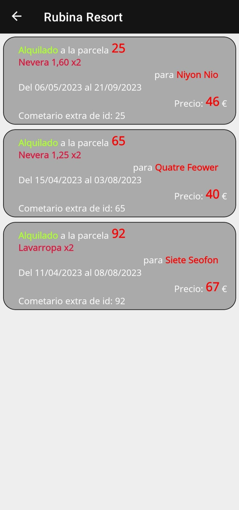

Proyecto de final de grado
¡Buenas! Voy a mostrarles el proyecto de final de grado que hice.
Se trata de una aplicación para una empresa de alquiler de neveras en la que trabajé.
El front-end esta desarrollado en .NET MAUI, el back-end en en ASP.NET y hosteado en Azure App Services.
La base de datos general esta hecha con MySQL y también esta dentro de Azure.
La base de datos local, la que usa la aplicación, esta hecha con SQLite.
Para sincronizar ambas bases de datos se usó Dotmim.Sync y para los mapas se usó Leaflet.js
Funciones
En este diagrama se puede ver las funciones creadas y quien las puede usar.
Esto seria un breve resumen de lo que hacen:
Esto seria un breve resumen de lo que hacen:
- Listar y modificar inventario:
- permite gestionar el stock disponible, este irá cambiando conforme se alquilen y se devuelva el producto.
- Visualizar repartidores:
- muestra en un mapa la ultima localización detectada por los repartidores.
- Listar y filtrar reservas:
- lista todas las reservas dependiendo del filtro seleccionado.
- Crear reservas:
- muestra un formulario con los datos necesarios para crear una reserva.
- Editar reservas:
- permite modificar los datos de una reserva ya creada.
- Visualizar reservas:
- muestra en un mapa las parcelas del camping seleccionado y el estado de la reserva.
- Descargar reservas:
- descargar las reservas nuevas automáticamente.
Base de datos
Diseño de la aplicación
Este es un diagrama del flujo de navegación de la aplicación.
Una vez iniciada session, se puede acceder a las reservas o bien a las funciones de administrador. Estas solo están disponibles si el usuario tiene rol administrador.
Una vez iniciada session, se puede acceder a las reservas o bien a las funciones de administrador. Estas solo están disponibles si el usuario tiene rol administrador.
La aplicación
Menu principal
Una vez iniciado session este es el menú principal.
Abajo se encuentran el botón de cerrar session y el de las opciones de administrador (unicamente si has entrado con una cuenta de administrador)
Los demás botones sirven para seleccionar un filtro para listar las reservas, podemos ver como están los nombres de los campings y otros, y un boton para filtrar por estado.
Abajo se encuentran el botón de cerrar session y el de las opciones de administrador (unicamente si has entrado con una cuenta de administrador)
Los demás botones sirven para seleccionar un filtro para listar las reservas, podemos ver como están los nombres de los campings y otros, y un boton para filtrar por estado.

Filtrar reservas por camping
Este es el menú principal, aquí se encuentra el filtro principal, el de camping,
seleccionando cualquiera de ellos, nos lleva una lista de todas las reservas de ese camping unicamente.
Al filtrar por camping, en la parte inferior aparece un menu que permite filtrar por las reservas para entregar, recoger, o otros.
También se encuentran el botón para ver el mapa y otro para crear una reserva.
Si arrastramos las reservas, aparecen menus adicionales para cambiar el estado de la reserva con más facilidad
Al filtrar por camping, en la parte inferior aparece un menu que permite filtrar por las reservas para entregar, recoger, o otros.
También se encuentran el botón para ver el mapa y otro para crear una reserva.
Si arrastramos las reservas, aparecen menus adicionales para cambiar el estado de la reserva con más facilidad

Filtrar reservas por estado
Estas serian las opciones. Además de filtrar por estado y camping, se puede filtrar parcela, cliente o fecha.

Crear y editar reservas
El formulario para editar o crear es el mismo.
Aquí se accede o manteniendo clicado una reserva o en el botón que se encuentra en la lista de reservas.
Aquí se accede o manteniendo clicado una reserva o en el botón que se encuentra en la lista de reservas.
Mapa reservas
Al seleccionar visualizar las reservas en mapa, se ven todas las parcelas del camping y las reservas en código de color.
Verde para entregar, rojo para recoger, purpura alquilado, amarillo para otros y gris para ninguno.
Si se clica la parcela puedes ver su numero.
Verde para entregar, rojo para recoger, purpura alquilado, amarillo para otros y gris para ninguno.
Si se clica la parcela puedes ver su numero.
Visualizar y modificar inventario
Aquí se puede ver el inventario. Se ve el nombre del producto, cuanto hay en total y cuanto hay disponible.
A la derecha hay un menú para añadir tanto al total como al disponible.
A la derecha hay un menú para añadir tanto al total como al disponible.

Visualizar repartidores
En este mapa se puede ver la ultima ubicación registrada de los repartidores.